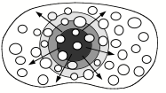
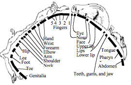
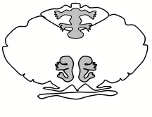
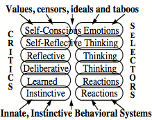
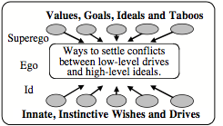

Chapter III. FROM PAIN TO SUFFERING
§3-1. Being in Pain.............................................................................................................................................. 1
§3-2. Why does Persistent Pain lead to Suffering?.............................................................................................. 2
§3-3. The Machinery of Suffering....................................................................................................................... 4
Physical vs. Mental 'Pain'................................................................................................................................ 5
Feeling, Hurting, and Suffering....................................................................................................................... 6
§3-4. Overriding Pain........................................................................................................................................... 7
Prolonged and Chronic Suffering................................................................................................................... 8
Grief................................................................................................................................................................ 9
§3-5. Critics, Correctors, Suppressors, and Censors.......................................................................................... 10
Excessive Switching...................................................................................................................................... 12
Learning from Failure................................................................................... Error! Bookmark not defined.
The Power of Negative Thinking................................................................... Error! Bookmark not defined.
§3-6. The Freudian Sandwich........................................................................................................................... 15
§3-7. Controlling our Moods and Dispositions................................................................................................. 16
§3-8. Emotional Exploitation.............................................................................................................................. 18
QUESTIONS..................................................................................................... Error! Bookmark not defined.
Questions:........................................................................................................... Error! Bookmark not defined.
“Great pain urges all animals, and has urged them during endless generations, to make the most violent and diversified efforts to escape from the cause of suffering. Even when a limb or other separate part of the body is hurt, we often see a tendency to shake it, as if to shake off the cause, though this may obviously be impossible.” —Charles Darwin[1]
What happens when you stub your toe? You’ve scarcely felt the impact yet, but you catch your breath and start to sweat—because you know what’s coming next: a dreadful ache will tear at your gut and all other goals will be brushed away, replaced by your wish to escape from that pain.
How could such a simple event distort all your other thoughts so much? What could make the sensation called pain lead one into the state we call suffering? This chapter proposes a theory for this: any pain will activate the goal “Get rid of that Pain”, and achieving this will be the end of it. But if that pain is intense and persistent enough, this will arouse yet other resources that tend to suppress your other goals—and if this grows into a large-scale “cascade,” there won’t be much left of the rest of your mind.

Of course, sometimes a pain is just a pain; if it doesn’t last long or it’s not too intense, then it won’t escalate into suffering. Besides, you can usually muzzle a pain for a time, by trying to think about something else. Sometimes you even can make it hurt less by thinking about the pain itself: just focus your attention on it, evaluate its intensity, and try to regard its qualities as interesting novelties. But this only provides a brief reprieve because, whatever diversions you try, pain contines to gripe and complain, like a nagging, frustrated child; you can think about something else for a time, but will soon again be distracted to its demands.
Daniel Dennett: “If you can make yourself study your pains (even quite intense pains) you will find, as it were, no room left to mind them: (they stop hurting). However studying a pain (e.g., a headache) gets boring pretty fast, and as soon as you stop studying them, they come back and hurt, which, oddly enough, is sometimes less boring than being bored by them and so, to some degree, preferable."
In any case, we should be thankful that pain evolved, because it protects our bodies from harm, first by making one try to remove its cause, and then by helping the injured part to rest and repair itself by keeping one from moving it. Here are some other ways in which pain protects us from injury.
Pain makes you focus on the body-parts involved.
It makes it hard to think about anything else.
Pain makes you move away from its cause.
It makes you want that state to end, and teaching you, for future times, not to
repeat the same mistake.
Yet instead of being grateful for pain, people often complain about it. "Why are we cursed," pain’s victims ask, "with such unpleasant experiences?" And although we often think of pain and pleasure as opposites, they have many similar qualities:
Pleasure makes you focus on the body-parts
involved.
It makes it hard to think about anything else.
It makes you draw closer to its cause.
It makes you want to maintain that state, while teaching you, for future times,
to keep repeating the same “ mistake.”
All this suggests that both pleasure and pain engage some of the same kinds of machinery; both constrict one’s range of attention, both have connections with how we learn, and both reduce the priorities of almost all one’s others goals. In view of these similarities, an alien from outer space might wonder why people like pleasure so much—yet display so little desire for pain.
Alien: Why do you humans complain about pain?
Person: We don’t like pain because it hurts.
Alien: Then explain to me what “hurting” is.
Person: Hurting is simply the way pain feels.
Alien: Then please tell me what you mean by “feel.”
At this point the conversation might stop, if that person is one of those who insist that there’s no way to explain what feelings are:
Dualist Philosopher: Science can only explain a thing in terms of other, yet simpler things. But subjective feelings like pleasure or pain cannot be reduced to smaller parts because, by nature, they’re indivisible.
However, we won’t agree with that. We’ll argue that feelings do have parts—and that, by recognizing their complexity, we can indeed find ways to explain what feelings are made of, and how they work.
∞∞∞∞∞∞∞∞∞∞∞∞∞∞∞∞∞∞∞
We often speak of hurting, pain and suffering as though they were more or less the same, and differ mainly in degree. However, while the effects of transient discomforts are brief, the longer that pain remains intense, the longer those cascades will continue to grow, and your efforts to think will deteriorate—so that goals that seemed easy in normal times get increasingly harder to achieve, as each more and more systems become distressed and start to transmit disturbing requests. Then we use words like suffering, anguish, and torment to describe what happens when persistent pain comes to disrupt so many of your other plans that you can barely think about anything but how this condition is impairing you.
In other words, it seems to me that a major component of suffering is the frustration that comes with the loss of your options; it is as though most of your mind has been stolen from you, and your awareness of this only makes things seem worse. For example, I have heard suffering likened to a balloon that keeps dilating inside one’s mind until there's no more room for its usual thoughts. This image suggests, among other things, that one has lost so much ‘freedom of choice’ that one feels as though one has become a prisoner. And sometimes one is unable fail to think of any fitting analogy.
"I'm so something that I can't remember what it's called."—Miles Steele (age 5)
Here are a few of the sorrows and torments that come when suffering imprisons us:
Anguish of losing mobility.
Resentment of not being able to think.
Dread of becoming disabled and helpless.
Shame of becoming a burden to friends.
Remorse at dishonoring obligations.
Dismay at the prospect of failure.
Mortification of seeming abnormal.
Terror of further decline and death.
Of course, we also lose some “freedom of choice” when we get into any particular mental state, because we are partly constrained by whatever goals this activates. We never have enough time to do all the things we want to do—and every new idea or ambition may conflict with some previous ones. Most times, we don’t mind those conflicts much, because we feel that we’re still in control—partly because we usually know that if we do not like the result, we still can go back and try something else.
However, when an aching pain intrudes, all our projects and plans get thrust aside, as though by an external force[2] —and then all we have left are desperate schemes for finding ways to escape from the pain. Pain’s imperatives are useful when they help us to deal with emergencies—but when our pain cannot be relieved, then it turns into catastrophe.
The primary function of Pain is to compel one to remove what is causing it—but in doing this, it tends to disrupt most of a person’s other goals. Then, if this results in a large-scale cascade, we use words like ‘anguish’ or ‘suffering’ to describe what remains of its victim’s mind.
Indeed, suffering can affect you so much that your friends may see you being replaced by a different personality. It may even make you so regress that you cry out and beg for help, as though you've become an infant again. Of course, you still may seem the same to yourself because you still possess your old memories and abilities. But you won’t be able to use those well until you switch back to your regular Self.
“Life is full of misery, loneliness, and suffering – and it’s all over much too soon.” – Woody Allen
∞∞∞∞∞∞∞∞∞∞∞∞∞∞∞∞∞∞∞
“The restless, busy nature of the world, this, I declare, is at the root of pain. Attain that composure of mind, which is resting in the peace of immortality. Self is but a heap of composite qualities, and its world is empty like a fantasy.” —Buddha
Let’s examine an instance of what takes place when one becomes a victim of pain.
Yesterday Joan tripped on a step. She didn't suspect that she’d injured herself—but today there’s a terrible pain in her knee. She's been working on an important report, which she plans to deliver tomorrow. “But if this keeps up,” she hears herself think, “I won't be able to take that trip.” She tries to concentrate on her work, but then decides to take a pill that might bring some help. However, a stab of pain keeps her from getting up, and instructs her not to use that leg. Joan clutches her knee, catches her breath, and tries to think about what to do next—but the pain so overwhelms her that she cannot focus on anything else.
“Get rid of Me,” Joan’s pain insists—but how does Joan know that it comes from her knee? We know that each person is born equipped with connections that run from each part of the skin to ‘maps’ in several parts of the brain, such as these in the sensory cortex and cerebellum. [3]

However, we seem to lack any maps like this to represent places inside our skins, and this could be why we find it so hard to locate pains that come from our internal organs; presumably, no such maps evolved because, before the advent of modern medicine, we would not have had much use for them. We had no way to repair or protect an abdominal organ except by guarding one’s entire belly, so it would not have useful to know more than that one was having a bellyache; similarly, it would not have helped to recognize that a pain came from one’s hypothalamus because we had no remedies that applied to specific places inside our brains. (We’ll discuss this more in §§Qualia.)
As for the sense of pain itself, our scientists know quite a lot about the first few events that result happen a part of the body is traumatized: first, the injured cells release chemicals that cause a special type of nerve to send signals to the spinal cord. Here is a typical attempt to describe what happens after that:
The sense of pain originates when special nerves react to high temperature, pressure, etc. Then their signals rise up to the thalamus, which relays them to other parts of your brain—in ways that seem to involve hormones, endorphins, and neurotransmitters. Eventually, some of those signals reach your limbic system, and this results in emotions like as sadness, anger, and frustration.
However, to understand why persistent pain can lead to what we call hurting and suffering, it doesn’t much help only to know where various functions take place in the brain; we would also need to know what each one of those various brain-parts does—and how its processes interact with the other parts that are connected to it. Is some particular part of the brain in charge of our hurting and suffering? Apparently so, to some extent, as cautiously noted by Ronald Melzack and Patrick Wall, who pioneered theories of how pain works:
“An area within the functionally complex anterior cingulate cortex has a highly selective role in pain processing, consistent with an involvement in the characteristic emotional/motivational component (unpleasantness and urgency) of pain."[4]
But then those authors go on to point out that pain also involve many other parts of the brain:
"The concept [of a pain center] is pure fiction unless virtually the whole brain is considered to be the ‘pain center,’ because the thalamus, the limbic system, the hypothalamus, the brain stem reticular formation, the parietal cortex, and the frontal cortex are all implicated in pain perception."
Perhaps we’ll find more clues about how suffering works by studying a rare condition that results from injuring certain parts of the brain: the victims of ‘Pain Asymbolia’ still recognize what the rest of us describe as pain—but do not find those feelings unpleasant, and may even laugh in response to them—which suggests that these patients have lost some resources that normally cause those cascades of torments.
However, to understand what suffering is, it won’t suffice to just learn more about the machinery involved with this—until we also develop better ideas about how those processes relate to our highest-level values, goals and mental models of ourselves:
Daniel Dennett: “Real pain is bound up with the struggle to survive, with the real prospect of death, with the afflictions of our soft and fragile and warm flesh. ... There can be no denying (though many have ignored it) that our concept of pain is inextricably bound up with (which may mean something less strong than essentially connected with) our ethical intuitions, our senses of suffering, obligation, and evil.” [5]
∞∞∞∞∞∞∞∞∞∞∞∞∞∞∞∞∞∞∞
Are mental and physical pains the same? Suppose that you were to hear Charles say, "I felt so anxious and upset that it felt like something was tearing my gut.” You might conclude that Charles’s feelings reminded him of times when he had a stomachache.
Physiologist: It might even be true that 'your stomach crawled' —if your mental condition caused your brain to send signals to your digestive tract.
Why do we so often speak as though ‘hurt feelings’ resemble physical pains, although they have such different origins? What similarities could there be between pinching one’s finger or burning one’s skin, and feeling rejected by one’s peers? One answer could be that, although these begin with different kinds of events, both may eventually seize control of the same higher-level machinery, and thus end up making similar changes in our mental states.
Student: As a child, I once I hit my head on a chair, so I covered the injury with my hand. Then although the pain was severe, it was not bad enough to make me cry. But as soon as I noticed some blood on my hand, then genuine suffering began.
I think this shows how much higher-level activities can help to set off large-scale cascade of suffering. And sometimes, this needs no physical pain—as when disrespect on the part of a friend can disrupt your brain in much the same way as would an abdominal pain. So can these other kinds of reaction:
The grief of losing a long-term companion,
The helplessness of seeing others in pain,
The frustration of trying to stay awake,
The ache of humiliation or embarrassment,
The distraction that comes with excessive
stress.
So, sometimes a physical pain will just fade away, but in other cases it may get amplified until its victims are driven to such distraction that they consider relief in suicide.
∞∞∞∞∞∞∞∞∞∞∞∞∞∞∞∞∞∞∞
“As he thought of it, a sharp pang of pain struck through him like a knife and made each delicate fiber of his nature quiver. His eyes deepened into amethyst, and across them came a mist of tears. He felt as if a hand of ice had been laid upon his heart.” —Oscar Wilde in The Picture of Dorian Grey.
We have many words for types of pain—like stinging, throbbing, piercing, shooting, gnawing, burning, aching, and so on. But words never capture quite enough of what any particular feeling is, so we have to resort to analogies that try to describe what each feeling is like—such as ‘a knife’ or ‘a hand of ice’—or images of a suffering person’s appearances. Dorian Grey felt no physical pain, but was horrified about growing old—hideous, wrinkled, and worst of all, of having his hair lose its beautiful gold.
But what makes feelings so hard to describe? Is this because feelings are so simple and basic that there’s nothing more to be said about them? No, it's precisely the opposite, because, it seems to me, that what we call feelings are the results of attempts (by some parts of one’s mind) to describe one’s entire mental condition. However, every human mental state is so complex that any brief description of it could capture just a few aspects of it. So the best that we can do is to recognize some ways in which our present state is similar to or differs from some other states that we recollect.
In other words, because we have so little sense of how our feelings actually work, we can only describe them in terms of analogies. Nevertheless, it can be easy to recognize (as opposed to describe) a particular feeling or mental condition because you may only need to detect a few of its characteristic features. This allows us to tell our friends enough about how we presently feel, because (assuming that both minds have somewhat similar structures) just a few clues may be enough for one person to recognize the other’s condition. And in any case, most people know that this kind of communication or ‘empathy’ is open to error as well as deception.
All this raises questions about of what distinctions we’re trying to make with words like pain, hurting, and suffering. People sometimes use those terms as though they only distinguish intensities—but here I’ll use pain for sensations that arrive quickly after an injury, and use hurting for what happens when this elevates the goal to get rid of the pain. Finally, I will use “suffering” for the states that result when this escalate into a large-scale cascade that disrupts all one’s usual ways to think.
Philosopher: I agree that pain can lead to many kinds of changes in a person’s mind, but that doesn’t explain how suffering feels. Why can’t all that machinery work without making people feel so bad?
It seems to me that when people talk about ‘feeling bad’ they are referring to the disruption of their other goals, and to the various conditions that result from this. Pain would not serve the functions for which it evolved if it allowed us to keep pursuing our usual goals, while our bodies were being destroyed. But if all of the rest of the mind were suppressed, then, without our reflective abilities, we might be unable to think of adequate ways to get rid of the pain. However, if we can still reflect on ourselves, then this will also produce the sort of conditions that we call by names like resentment, remorse, dismay, and fear. Consequently, our minds get trapped in the terrible vice-like compromise that we describe as suffering. In §§Zombie-Machines, I’ll suggest some reasons why we were unable to evolve a better alternative.
Philosopher. Isn’t there still something missing here. You have been describing various mental conditions—but you have not said anything about why those conditions should give rise to feelings—or to our sense of directly experiencing things.
I think that I have a good way to explain this, but it will need a lot of preparation, so we’ll postpone discussing how feelings work until section 9-6, which is near to the end of this book,
∞∞∞∞∞∞∞∞∞∞∞∞∞∞∞∞∞∞∞
Sonja: “To love is to suffer. To avoid suffering one must not love. But then one suffers from not loving. Therefore, to love is to suffer; not to love is to suffer; to suffer is to suffer. To be happy is to love. To be happy, then, is to suffer, but suffering makes one unhappy. Therefore, to be happy one must love or love to suffer or suffer from too much happiness.” — Woody Allen, in “Love and Death.”
Some of pain's effects are so quick that they’re finished before you’ve had ‘time to think’. If Joan had happened to touch something hot, she might have jerked her arm away before she even noticed it. But for the pain that came from inside Joan’s knee, her reflexes can’t take it away, and it followed her everywhere she went. When persistent pain gets too good at its job of forcing you to focus on it, then it can actively interfere with imagining ways to get rid of it.
Of course, if Joan urgently wants to cross that room, she can probably do it ‘in spite of the pain’—at the risk of further injury. However, professional boxers and football players can train themselves to tolerate blows that may damage their bodies and their brains. How do they manage to override pain? We each know some tricks for doing this and, depending on the culture we’re in, we see some of these as commendable, and others as execrable.
"About that time, G. Gordon Liddy began a new exercise in will power. He would burn his left arm with cigarettes, then matches and candles to train himself to overcome pain. … Years later, Liddy assured an acquaintance that he would never be forced to disclose anything he did not choose to reveal. He asked her to hold out a lit lighter. Liddy put his hand in the flame and held it there until the smell of burning flesh caused his friend to pull the flame away." —Larry Taylor
Another way to deal with pain is to apply a counter-irritant: when a certain part of your body aches, it sometimes helps to rub or pinch that spot—or to aggravate some different place. But why should a second disturbance offset the first, instead of simply making things worse? [6] A simple theory of this might be that when there are multiple sources of pain, it is hard for the rest of the brain to choose one to ‘focus’ on—and so this (somehow) makes it more difficult for a single cascade to maintain its growth. And why do such drugs as the opiates have specific effects on how much we hurt? Researchers have many ideas about this but those theories are still incomplete.
If you keep your mind involved with other things, then a pain may seem to feel less intense. We all have heard those anecdotes about wounded soldiers who continue to fight without being disrupted by pain—and only later succumb to shock, after the battle is lost or won. Thus a goal to survive, or to save one's friends, may be able to override everything else. On a smaller scale, with a mild pain, you can just be too busy to notice it. Then the pain may still ‘be there’ but cannot quite manage to ‘get your attention.’ longer seems to bother you much.
Shakespeare reminds us (in King Lear) that misery loves company: no matter how awful one’s lot may be, we still may draw comfort from knowing that the same could happen to someone else.
When we our betters see bearing our woes,
We scarcely think our miseries our foes.
Who alone suffers suffers most i'th' mind,
Leaving free things and happy shows behind;
But then the mind much sufferance doth o'erskip
When grief hath mates, and bearing fellowship.
How light and portable my pain seems now,
When that which makes me bend makes the King bow.
Many other processes can alter how pain can affect our behavior:
Aaron Sloman: “Some mental states involve dispositions, which in particular contexts would be manifested in behavior, and if the relevant behavior does not occur then an explanation is needed (as with a person who is in pain not wincing or showing the pain or taking steps to reduce it). The explanation may be that he has recently joined some stoic-based religious cult, or that he wants to impress his girl friend, etc."—In comp.ai.philosophy, 20/7/96.
This applies to the treatment of pain-ridden people.
Marian Osterweis: “The degree of awareness of one's own pain may vary from a near denial of its presence to an almost total preoccupation with it, and the reasons for attending to pain may vary. Pain itself may become the focus of the self and self-identity, or may, however uncomfortable, be viewed as tangential to personhood. One of the most powerful influences on the way in which symptoms are perceived and the amount of attention paid to them is the meaning attributed to those symptoms.”[7]
Finally, in Chapter §9, we’ll discuss the seeming paradox implied by the common expression, “No pain, no gain.” There are many common activities, such as in competitive sports, or training for strength, in which one tries to do things beyond one’s reach—and where the greater the pain, then the higher the score.
∞∞∞∞∞∞∞∞∞∞∞∞∞∞∞∞∞∞∞
When an injured joint becomes swollen and sore, and the slightest touch causes fiery pain, it’s no accident that we call it 'inflamed.' What could be the value of this, once the damage is already done? First, it can lead you to protect that site; thus helping that injury to heal; then it can make you feel sick and weak, both of which help to slow you down. So pain can promote recovery.
However, it is hard to defend the dreadful effects of those chronic pains that never end. Then we tend to ask questions like, “What did I do to deserve this?" Then if we can find something that justifies punishment, it may bring us relief to be able to think, "Now I can see why it serves me right!”
Many victims discover no such escapes, and find that much has been lost from their lives; some even decide to end their lives. However, some others find ways to regard their sufferings as incentives or opportunities to show what they can accomplish, or even as unexpected gifts to help them to cleanse or renew their characters.
F. M. Lewis: “Becoming an invalid can be a blow to a person's self-esteem. However, for some patients, the sick role is seen as an elevation in status—deserving the nurturance and concern of others. The ability to assign meaning to an illness or to symptoms has been found to enhance some patients' sense of self-mastery over a problem or crisis."[8]
Thus some of those victims find ways to adapt to chronic, intractably painful conditions. They work out new ways to make themselves think and rebuild their lives around those techniques. Hear Oscar Wilde describe how he deals with his inescapable misery:
“Morality does not help me. I am one of those who are made for exceptions, not for laws. Religion does not help me. The faith that others give to what is unseen, I give to what one can touch, and look at. Reason does not help me. It tells me that the laws under which I am convicted, and the system under which I have suffered are wrong and unjust. But, somehow, I have got to make both of these things just and right to me. I have got to make everything that has happened to me good for me. The plank bed, the loathsome food, the hard ropes, the harsh orders, the dreadful dress that makes sorrow grotesque to look at, the silence, the solitude, the shame—each and all of these things I had to transform into a spiritual experience. There is not a single degradation of the body which I must not try and make into a spiritualizing of the soul.”[9]
Recent research on pain relief has developed new techniques, first for assessing degrees of pain and then for successfully treating it. We now have drugs that can sometimes suppress some of pain’s most cruel effects—but many still never find relief, either by mental or medical means. It seems fair to complain that, in this realm, evolution has not done well for us—and this must frustrate theologians: Why are people made to suffer so much? What functions could such suffering serve?
One answer is that the bad effects of chronic pain did not evolve from selection at all, but simply arose from a 'programming bug.’ The cascades that we call ‘suffering’ must have evolved from earlier schemes that helped us to limit our injuries—by making the goal of escaping from pain take such a high priority—and the resulting disruption of other thoughts was only was a small inconvenience before our ancestors evolved new, vaster intellects. In other words, our ancient reactions to chronic pains have not yet been adapted to be compatible with the reflective thoughts and farsighted plans that only later evolved in our brains. Evolution never had any sense of what a species might evolve next—so it never prepared for intelligence. And thus, we came to evolve a design that protects our bodies but ruins our minds.
∞∞∞∞∞∞∞∞∞∞∞∞∞∞∞∞∞∞∞
I cannot weep, for all my body's moisture
Scarce serves to quench my furnace-burning heart;
Nor can my tongue unload my heart's great burden,
For self-same wind that I should speak withal
Is kindling coals that fires all my breast,
And burns me up with flames that tears would quench.
To weep is to make less the depth of grief.
Tears then for babes; blows and revenge for me!
Richard, I bear thy name; I'll venge thy death,
Or die renowned by attempting it.—Henry the Sixth, Part III
When you suffer the loss of a long-time friend, you feel that you’ve lost a part of yourself, because so many parts of your mind depend on that sharing of dreams and ideas—and now, alas, the signals that those brain-parts transmit will never again receive replies. This is just like losing a hand or an eye—and that could be why it takes so much time to come to terms with being deprived of resources that you could rely on before.[10] [See also §§Grief]
Gloucester:
Be patient, gentle Nell; forget this grief.
Duchess: Ah, Gloucester, teach me to forget myself! —Henry the Sixth part II
Nell can’t comply with Gloucester’s advice because her links of affection are widely dispersed; they aren’t all stored in some single place that she could select and then quickly erase. Besides, she may not wish to forget them all, as Aristotle suggests in Rhetoric:
“Indeed, it is always the first sign of love, that besides enjoying someone's presence, we remember him when he is gone, and feel pain as well as pleasure, because he is there no longer. Similarly there is an element of pleasure even in mourning and lamentation for the departed. There is grief, indeed, at his loss, but pleasure in remembering him and, as it were, seeing him before us in his deeds and in his life.”
Thus Shakespeare shows how people embrace their griefs, and squeeze them until they take on more pleasing shapes:
Grief
fills the room up of my absent child,
Lies in his bed, walks up and down with me,
Puts on his pretty looks, repeats his words,
Remembers me of all his gracious parts,
Stuffs out his vacant garments with his form;
Then have I reason to be fond of grief. —Constance, in King John,
∞∞∞∞∞∞∞∞∞∞∞∞∞∞∞∞∞∞∞
"Don't pay any attention to the critics. Don't even ignore them."—Sam Goldwyn
It would be great to never make a mistake, or to get an idea that’s not perfectly right—but we all make errors and oversights.
Joan’s sore knee has been getting worse. Now it hurts her all the time, even when it isn’t touched. She thinks, “ I shouldn't have tried to pick up that box. And I should have put ice on my knee at once.”
However, although our decisions are frequently incorrect, it truly is remarkable how rarely these lead to catastrophes. Joan seldom sticks things in her eye. She scarcely ever walks into walls. She never tells strangers how ugly they are. How much of a person’s competence is based on knowing which actions not to take?
We usually think of a person’s abilities in positive terms, as in, "An Expert is someone who knows what to do." But one could take the opposite view, that "An Expert is someone who rarely slips up–because of knowing what not to do.” But how do people develop their precious collections of what I call Negative Expertise? I suspect that this is a very large part of each person’s huge body of commonsense knowledge—and yet, this subject was almost never discussed in 20th century Psychology (except, perhaps most notably, in Sigmund Freud’s analyses).
Perhaps that neglect was inevitable because, in the early 1900s, most psychologists became “behaviorists.” That is, they trained themselves to only think about the physical actions that people do—while putting aside any questions about the things that people usually do not do. The result was to almost completely ignore the important topic of negative knowledge—which was not regarded as part a person’s behavior because of not being ‘observable.’[11]
To explain how our negative expertise works, I’ll conjecture that our minds accumulate resources that we shall call Critics—each of which learns to recognize some particular kind of potential mistake. Here, I’ll assume that everyone possesses the three kinds of Critics described below, and we’ll see others in Chapters 6 and 7.
A Corrector declares that you are doing something dangerous. "You must stop right now, because you’re moving your hand toward a flame.”
A Suppressor interrupts
before you begin the action you’re
planning to take. “Don’t
start to move your hand toward that flame, lest it get burned.”
A Censor acts yet
earlier, to prevent that idea from occurring to you—so you never even consider
the option moving your hand in that direction.
A Corrector’s warning may come too late, because the action already is going on. A Suppressor can stop it before it begins—but both can slow you down by taking some time. In contrast, a Censor can actually speed you up, by keeping you from considering the activities that it prohibits. This could be one reason why experts are sometimes so quick; they don’t even conceive of the wrong things to do.
Student: How could a censor keep you from thinking of something before you have started to think about it? Isn’t that some kind of paradox?
Programmer: No problem. Design each Censor to be a machine that learns to recognize the way you were thinking two or three steps before you made a certain mistake in the past. Then later, when that Censor recognizes a similar state, it steers you to think in some different way so that then you won’t repeat that mistake.
Sometimes, of course, this might not work, for example if, when you had to a certain choice, both of your alternatives were bad.
Programmer: You could avoid that by making Censors that use more memory, to recognize mental strategies that took longer to get you into trouble.[12]
Of course, excessive cautiousness could have bad effects. If your Critics tried to prevent you from making every conceivable type of mistake, you might become so conservative that you would never attempt to do anything new. You might never be able to cross a street, because you could always conceive of some way you could meet with some accident.
I should note that in everyday language we often restrict the word Critic to a person who only points out deficiencies. However, it also is useful to recognize when a result is better than one expected—and then to bestow more priority, time, or energy to the process that deserves credit for this. To do this, we also need ‘positive’ critics, so in section 7-3 we will add some Encouragers to our list. However, for now we’ll simply keep using Critic for making both kinds of assessments.
Where would these mental Critics reside in our multi-level view of the mind? We’ll simply assume that we have Critics at every level, so that each person’s mind will include Reactive, Deliberative and Reflective ones. A typical Critic will work to evaluate activities that go on at the levels below it.

We’ll say more about this in Chapter 7, but here is the essential idea: whenever a Critic becomes aroused (by detecting some predicament—or some potential benefit), then it will try to activate one or more of what we will call Selectors—where each Selector is a resource designed to changes that are likely to help one deal with that type of predicament. At the lowest level, those Critics and Selectors are almost identical to the Ifs and Thens of simple reactions. But at our higher reflective levels, these Critics and Selectors can cause so many changes that, in effect, they switch us to different Ways to Think. [13]
I have of late— but wherefore I know not— lost all my mirth, forgone all custom of exercises; and indeed it goes so heavily with my disposition, that this goodly frame, the earth, seems to me a sterile promontory; this most excellent canopy, the air, look you, this brave o’erhanging firmament, this majestical roof fretted with golden fire, why, it appeareth nothing to me but a foul and pestilent congregation of vapors. –Hamlet II.ii.292
What happens if too many Critics get switched? Perhaps here is a first-hand description of this:
Kay Redfield Jamison: "The clinical reality of manic-depressive illness is far more lethal and infinitely more complex than the current psychiatric nomenclature, bipolar disorder, would suggest. Cycles of fluctuating moods and energy levels serve as a background to constantly changing thoughts, behaviors, and feelings. The illness encompasses the extremes of human experience. Thinking can range from florid psychosis, or "madness," to patterns of unusually clear, fast and creative associations, to retardation so profound that no meaningful mental activity can occur. Behavior can be frenzied, expansive, bizarre, and seductive, or it can be seclusive, sluggish, and dangerously suicidal. Moods may swing erratically between euphoria and despair or irritability and desperation. … [But] the highs associated with mania are generally only pleasant and productive during the earlier, milder stages.”[14]
A later paper by Jamison goes on to suggest that some value can come from those massive cascades:
“It seems, then, that both the quantity and quality of thoughts build during hypomania. This speed increase may range from a very mild quickening to complete psychotic incoherence. It is not yet clear what causes this qualitative change in mental processing. Nevertheless, this altered cognitive state may well facilitate the formation of unique ideas and associations. … Where depression questions, ruminates and hesitates, mania answers with vigor and certainty. The constant transitions in and out of constricted and then expansive thoughts, subdued and then violent responses, grim and then ebullient moods, withdrawn and then outgoing stances, cold and then fiery states—and the rapidity and fluidity of moves through such contrasting experiences—can be painful and confusing.[15]
It is easy to recognize such extremes in the mental illnesses called ‘bipolar’ disorders, but I suspect that everyone constantly uses such processes in the course of their everyday commonsense thinking! Thus, whenever you face a new type of problem you might use a procedure like this:
First, briefly shut most of your Critics off. This helps you to think of some things you could do—with little concern about whether they’ll work—as though you were in a brief ‘manic’ state.
Next, turn many Critics on, to examine these options more skeptically—as though
you were having a mild depression.
Finally, choose one approach that seems promising, and then proceed to pursue it, until one of your Critics starts to complain that you have stopped making progress.
Sometimes you may go though such phases deliberately, perhaps spending several minutes on each. However, my conjecture is that we often do this on time-scales of one or two seconds, or less, in the course of our everyday commonsense thinking. But then, all these events may be so brief that we have almost no sense that they’re happening. Chapter §7 will say more about this idea.
"Never interrupt your enemy when he is making a mistake.” Napoleon Bonaparte
Many things that we regard as positive may partly be based on censoring some aspects of things that we might otherwise think of as negative. Thus a certain situation could seem ‘pleasant’ to mental processes that are active now, but might seem less so other processes that now are being suppressed. Here are a few examples of this, in which we see negative actions as positive.
Humor: Humor also is usually seen as positive, despite the fact that most jokes are basically negative—in the sense they are almost always about things that a person should not do, because they are socially prohibited or simply absurd or ridiculous.[16]
Decisiveness: We often speak of ‘making a choice,’ as though this were a deliberate act. However, that ‘action’ may, in fact, be nothing more than the moment at which you stopped some process that was comparing alternatives—and then, by default, you simple ‘chose’ the one that was now at the top of some list. In such a case, a person may speak of using ‘free will’—one could also see it as nothing more than a sort of admission (or even a boast) that one does not have a clear idea about what process produced this result.
Beauty: We tend to see Beauty as positive—but when people say something is beautiful, and you ask what makes them like it so much, they are likely to act as though under attack, or to simply insist, “I just like it.” This might suggest that some process is working to keep them from noticing defects or blemishes.
Parenting: To raise a human child, one has to spend years of struggle and sweat to house, feed, clean, clothe, teach, and protect it. What kind of incentive could make us forego so many other goals, to become so selfless and other-directed? Of course, we see mother-love as positive—but if we had not evolved effective ways to suppress all those potential complaints, no one would end up with any descendants.
Pleasure: When we think that we’re choosing the option that pleases us most, the selection may actually come from some process that has silenced all its competitors. This, as every addict knows, makes it hard to wish for anything else. If so, then the more pleasure we feel, the more negative may be that hidden effect on the rest of our mental processes! In such cases, “I am enjoying this,” could mean, “I want to remain in my present state, so I’ll try to suppress whatever might change it.”
We also can sometimes disable a process without directly suppressing it, by arousing one that competes with it. For example, in 8-3 we’ll see how one can hold off sleep by imagining a disturbing situation. Or one can simply repeat a stimulus until there is no further response to it, as in the old tale of The Boy who Cried Wolf.
Teacher: I was taught that learning works primarily by using pleasure to 'reinforce' those connections that have led to success—whereas failures deter and discourage us. Therefore teachers should make each lesson pleasant by giving rewards and encouragements.
This idea that each learning experience should be ‘positive’ was largely based on results from research that was mainly done with pigeons and rats. Then many educators generalized this to human students, concluding that it would be best to teach every subject by very small steps, so that pupils will usually meet with success. However, to understand a complex situation, one may need to learn how things can go wrong, so that one can evade the most common mistakes. Here are a few other reasons why only rewarding successful attempts may not always be a good strategy:
Reinforcement can lead to rigidity. If a system already works, additional ‘reinforcement’ could make some internal connections stronger than they need to be. Then this could make it harder for that system to later adapt to new kinds of situations.
Reinforcement can have bad side effects. If a certain resource has worked so well that other processes have come to depend on it, then any change you make in that resource will be likely to damage the performances of those other processes (because unplanned changes usually make things worse).
Papert’s Principle[17]: When two or more of your methods conflict, then instead of seeking a compromise, abandon the lot and then try something else. Many steps in mental growth are less based on acquiring new skills, and more on learning better ways to select which existing ones to use.
I certainly do not mean to suggest that ‘positive reinforcement’ is bad—but we often learn more from a failure than from a success, especially when we need to learn, not only which methods are likely to fail, but also how and why those failures occur as well as what might have caused our thoughts to go wrong. In other words, one learns much more when one investigates, rather than merely celebrates. And as we’ll argue in 8-5, this will involve reflective levels, which pigeons and rats do not possess.
Student: Yes, but can’t we learn from the times we fail, simply by breaking the connections we used—so that after you’ve made a bad mistake, your brain will tend less to do it again?
To weaken or break such connections might sometimes work, but it also opens one up to a serious risk: whenever you make a change in a system's connections, this is likely to impair those other resources that also depend on those same connections. If you don’t quite know how a system works, then there is some danger of making it worse by blindly ‘correcting its mistakes.’
Programmer: I know exactly what you mean. Every attempt to improve a program is likely to introduce new bugs. That's why new programs so often contain very big sections of ancient code: no one remembers quite how they work, and hence they’re afraid to change them. So, if something is wrong that you need to fix, then it is best to install a small, local, ‘patch’ and hope that the rest of the system will still work.
More generally, you can usually start to improve a skill by experimenting with many small steps—but eventually no more such changes may help, because you have reached a local peak. Then further improvement may require you to endure some discomfort and discouragement. Here is a simple example of this:
Charles happens to be in Tanzania. He wants to be at the highest possible altitude, while still remaining on solid ground. So, at every point he takes his next step in the direction of steepest ascent. Eventually, he may end up at the top of a very small hill, but if he is lucky he’ll finally get to the top of Mount Kilimanjaro. However, his strategy will never reach the summit of Mount Everest—because every such route includes some downward steps.
Of course, this also applies whenever we try to improve a mental ability. For a time, we can use that method of ‘steepest ascent’ by making many small, pleasant changes. But then, to make any further gain, we’ll have to endure at least some distress. So, while pleasure helps us learn easy things, we must learn to ‘enjoy’ some suffering when it comes to learning things that need larger-scale changes in how we think. Accordingly, section 9-4 will conjecture that too much positive reinforcement might actually hinder how children learn to climb the mountains inside their minds.
∞∞∞∞∞∞∞∞∞∞∞∞∞∞∞∞∞∞∞
Luck's
a chance, but trouble's sure,
I'd face it as a wise man would,
and train for ill and not for good.
—A. E. Housman
Few textbooks of psychology discuss how we decide what not to think about. However, this was a major concern to Sigmund Freud, who envisioned the mind as a system in which ideas need to overcome barriers.
"... a large anteroom in which the various mental excitations are crowding upon one another, like individual beings. Adjoining this is a second, smaller apartment, a sort of reception room, in which consciousness resides. But on the threshold between the two there stands a personage with the office of doorkeeper, who examines the various mental excitations, censors them, and denies them admittance to the reception-room when he disapproves of them. You will see at once that it does not make much difference whether the doorkeeper turns any one impulse back at the threshold, or drives it out again once it has entered the reception-room. That is merely a matter of the degree of his vigilance and promptness in recognition."[18]
However, getting past this first barrier is not quite enough to make us reflect on a possible thought—or what Freud calls a mental excitation—because this only leads to the reception room (which he sometimes calls the preconscious).
"The excitations in the unconscious, in the antechamber, are not visible to consciousness, which is of course in the other room, so to begin with they remain unconscious. When they have pressed forward to the threshold and been turned back by the doorkeeper, they are 'incapable of becoming conscious'; we call them then repressed. But even those excitations which are allowed over the threshold do not necessarily become conscious; they can only become so if they succeed in attracting the eye of consciousness."
Thus Freud imagined the mind as an obstacle course in which only ideas that get far enough are awarded the status of consciousness. In one kind of block (which Freud calls repression), an impulse is blocked at an early stage—without the thinker becoming aware of this. However, repressed ideas can still persist, and may be expressed in elusive disguises—by changing the manner in which they’re described, so that they no longer get blocked by the Censors. Freud used the term sublimation for this, but we sometimes call this “rationalizing.” Finally, an idea can reach the highest level and still be rendered powerless, although one can remember rejecting it (Freud calls this repudiation.)
In my version of the image that Freud provides, the human mind is a battleground in which many resources are working at once—but don't always share the same purposes. Instead, there often are serious conflicts between our animal instincts and our acquired ideals. Then the rest of the mind must either find ways to compromise or to suppress some of those competitors.

It is more than a century since Sigmund Freud raised issues like these—but even today few ‘cognitive psychologists’ seem to appreciate his ideas. Freud was among the first to recognize that we do not deal with everyday problems in any single, uniform way. Instead, he saw the human mind as a host of diverse activities that often lead to conflicts and inconsistencies—and our various ways deal with these involve many different processes, for which most psychologists still use vague names like Conscience, Emotion, and Consciousness.
∞∞∞∞∞∞∞∞∞∞∞∞∞∞∞∞∞∞∞
“Love, he believed, made a fool of a man, and his present emotion was not folly but wisdom; wisdom sound, serene, well-directed. … She seemed to him so felicitous a product of nature and circumstance that his invention, musing on future combinations, was constantly catching its breath with the fear of stumbling into some brutal compression or mutilation of her beautiful personal harmony …”—Henry James, in The American.
Section §1-2 described how one’s feelings toward things can swing between extremes:
"Sometimes a person gets into a state where everything seems to be cheerful and bright—although nothing outside has actually changed. Other times everything pleases you less: the entire world seems dreary and dark, and your friends complain that you seem depressed."
We use terms like 'disposition' and 'mood' to refer to these kinds of conditions, which change the subjects we’ll think about, and the ways in which we think about them. But what determines the length of time that a person will stay in each frame of mind, and then switch to some other set of concerns—so that first one may think about physical things, then about some social matters, and then start to reflect on one’s longer-term plans?
A flash of anger, fear, or a sexual image may last for only an instant, while other moods can last for minutes or hours—and some may continue for weeks or years. "John is angry" means that he's angry now—but "an angry kind of person" may describe a lifelong trait. On what do these durations depend? Perhaps this partly depends on how our mental Critics are managed.
Clearly, some of our Critics are always on the job, like voyeurs that constantly monitor us, waiting for moments to set off alarms—whereas other Critics are only active on special occasions, or in particular states of mind. Let’s look again at two extremes:
If you could switch all your Critics off, then nothing would seem to have any faults, and the whole world might suddenly seem to change so that everything now seems glorious. You'd be left with few worries, concerns, or goals—and others might describe you as elated, euphoric, demented or manic.
However, if you turned too many Critics on, you'd see imperfections everywhere. Your entire world would seem filled with flaws, engulfed in a flood of ugliness. If you also found fault with your goals themselves, you'd feel no urge to straighten things out, or to respond to any encouragement.
This means that those Critics must be controlled: if you were to turn too many on, then you would never get anything done. But if you turned all your critics off, it might seem as though all your goals were achieved—and again you wouldn't accomplish much.
So, let’s look more closely at what could happen if something turned most of your critics off. If you'd like to experience this yourself, there are some well-known steps you can take. [19] It would help to be suffering pain and stress, so starvation and cold might also assist. So will psychoactive drugs, and meditation can have such effects, and it helps to move into some strange, quiet place. Next, you could set up a rhythmical drone that repeats some monotonous phrase or tone, and soon it will lose all meaning and sense—and so will virtually everything else! Then, if you can get yourself into such a condition, you’ll have a chance to undergo this kind of experience:
Meditator: It suddenly seemed that I was surrounded by an immensely powerful Presence. I felt that a Truth had been ‘revealed’ to me that was far more important than anything else, and for which I needed no further evidences. But when later I tried to describe this to my friends, I found that I had nothing to say except how wonderful that experience was.
This is sometimes called a Mystical Experience or Euphoria, Ecstasy, Rapture, or Bliss. Our narrator calls it wonderful, but a better word might be wonderless, because I suspect that such a state of mind may mainly result from turning so many Critics off that one cannot find any flaws in it. What might such a Presence represent? It is sometimes seen as a deity, but I suspect that it is likely to be a version of some early imprimer that for years has been hiding inside your mind. In any case, such experiences can be dangerous—for some victims find them so compelling that they devote the rest of their lives to trying to get themselves back to that state again.
Nevertheless, in everyday life there remains a wide range in which it is both useful and safe to regulate your Suppressors and Censors. Sometimes you feel adventurous, inclined to try new experiments. Other times you feel conservative—and try to avoid uncertainty. And when you're in an emergency and don’t have time to reason things out, you may need to set aside long-range plans, suspend some relationships with your friends, and expose yourself to pain and stress. To do this, you'll have to suppress your Suppressors—and then you may seem like a quite different person.
All this raises many questions about how we develop our mental critics. How do we make them and how do we change them? Do some of them scold other critics when they produce poor performances? Are certain minds more productive because their critics are better organized? We’ll come back to such questions in §7-6.
∞∞∞∞∞∞∞∞∞∞∞∞∞∞∞∞∞∞∞
Whatever you may be trying to do, your brain may have other plans for you.
I was trying to work on a difficult problem, but was beginning to fall asleep. Then I found myself imagining that my friend Professor Challenger was about to develop the same technique. This caused a flicker of angry frustration, which blocked for the moment my urge to sleep—so that I was able to finish my job.
In fact, Challenger was not doing any such thing; he works in a totally different field—but we had recently been in an argument, so he could serve as a person to be angry at. Let's make up a theory of how this worked.[20]
A resource called Work was attending to one of my goals, but the process called Sleep tried to take over control. Then, somehow, I constructed that fantasy—and the resulting annoyance and jealousy counteracted that urge to sleep.
All of us use this kind of trick to combat frustration, boredom, hunger, or sleep. By self-inducing anger or shame, you can sometimes counteract fatigue or pain—as when one is falling behind in a race, or trying to lift too heavy a weight. With such an emotional 'double negatives', you can use one system to switch off another. However, such ‘Self-control’ tactics must be used cautiously. . If you don't sufficiently anger yourself, you might relapse into lassitude—whereas if you make yourself become irate, you’ll completely forget what you had wanted to do. Sometimes, just a tweak of anger might ward off Sleep, in a moment so brief that you don’t notice it.
Here’s another example where part of a mind 'exploits' one emotion for the purpose to turning off another—thus helping you to attain some goal that you cannot achieve more directly.[21]
Joan is trying to follow a diet. When she sees that chocolate cake, she is filled with a strong temptation to eat. But when she imagines certain acquaintance looking gorgeous in her new bathing suit—then Joan’s craving to have a similar shape keeps her from actually eating the cake.
How might such a fantasy work to produce that kind of effect? Joan has no straightforward way to suppress her reckless appetite—but she knows that the sight of her rival makes her more concerned about her body’s shape. Therefore, arousing that image is likely to diminish her urge to eat. (Of course, that strategy carries some risk: if her jealousy makes Joan feel depressed, she might engorge the entire cake.)
Citizen: Why should we need to use fantasies to induce ourselves to do such things—when we know that those images aren’t real? Why can’t we use more rational ways to figure out what we should do?
One answer is that the concept of ‘rational’ itself is a kind of fantasy—because our thinking never is entirely based on purely logical reasoning. To us, it might seem ‘irrational’ to exploit an emotion to solve a problem. However, when Joan’s Losing Weight encounters an obstacle, it makes just as much sense for that goal to exploit emotions like Jealousy or Disgust as it would for Joan herself to use a stick to extend her reach—no matter that even Joan herself may see such behaviors as "emotional.”
Besides, we're always doing such things in the course of our everyday commonsense thinking. When you sit at a table across from some friend, you cannot see their backs or legs, but this is of no concern to your—because most of what you think you see comes from your internal models and memories. For, while some parts of your brain get information from the outer world, most of them are reacting to information they get other places inside your brain. Indeed, a major part of our daily lives consists of imagining things we don’t have but might need—such as a forthcoming vacation. More generally, to think about changing the way things are, we have to imagine how they might be.
Citizen: I agree that we frequently do such things—but why should we need to tell lies to ourselves? Why can’t we directly just turn off Sleep, instead of resorting to fantasies? Why can’t we simply command our minds to do whatever we want them to do?
One answer seems clear: Directness would be too dangerous. If some other goal could simply turn Hunger off, we’d all be in peril of starving to death. If it could directly switch Anger on, we might find ourselves fighting most of the time. If it could simply extinguish Sleep, we'd be likely to wear our bodies out. So this shaped the way our brains evolved the instinctive reactions that keep us alive—by making it hard to hold one’s breath, or to keep from falling asleep, or to control how much you eat; those who were able to do such things left fewer descendants than did the rest. Nevertheless, we humans can still find ways to interfere with most of those vital processes—but only by being clever, inventive, and devious.
[1] In Expression of The Emotions In Man And Animals
[2] §6-3 will say more about what sometimes makes a goal feel like a force.
[3] This diagram is adapted from one in http://www.christianhubert.com/hypertext/brain2.jpeg. Does this need an attribution?’
[4] Ronald Melzack and Patrick Wall, in “Pain Mechanisms: A New Theory", Science, 150 p.975, 1965. Also, see www.umass.edu/preferen/mpapers/SingerEmpathy.pdf
[5] in “Why you can’t build a machine that feels pain,” Brainstorms, Bradford Books, 1978. This is an ironic title for the deeper idea that 'pain' is a suitcase word that comprises so many ideas and processes that it does not make much technical sense to speak of it as definite kind of entity.
[6]See “Pain: Past, Present and Future, “ Ronald Melzack, Canadian Journal of Experimental Psychology 1993, 47:4, 615-629.
[7] Marian Osterweis, Arthur Kleinman, and David Mechanic, "Pain and disability: Clinical, Behavioral, and Public Policy Perspectives." National Academy Press, 1987
[8] F.M. Lewis, “Experienced personal control and quality of life in late stage cancer patients. Nursing Research, 31(2) 113-119, 1982
[9] —From a letter to Lord Alfred Douglas, written during Wilde's imprisonment in Reading Gaol.
[10] [discuss the ‘5 stage’ theory and give pointer to §§Grief]
[11] The more radical behaviorists also ignored the verbal statements their subjects made, because they did not want to include a person’s mental activities in what they defined as “behavior.” Granted, when people observe their minds from inside, they usually show little insight into what stops them from having some types of ideas. Freud was convinced that this was often because our minds have powerful processes that actively block our access to the goals of certain other processes—including the very ones he was talking about.
[12] Refer to §5-3 look-ahead prediction section.
[13] For many more ideas about this see Push Singh’s essay about Reflective Critics, at http://web.media.mit.edu/~push/ReflectiveCritics.pdf
[14] “Touched With Fire: Manic-Depressive Illness and the Artistic Temperament," pp 47-48, The Free Press, Macmillan, New York, 1993.
[15] Kay Redfield Jamison, "Manic-Depressive Illness and Creativity," Sci. Amer., Feb. 1995 V. 272 No. 2 Pp. 62-67
[16] See my essay on Jokes, at web.media.mit.edu/~minsky/papers/jokes.cognitive.txt
[17] See §10-4 of SoM.
[18] Sigmund Freud, inA General Introduction to Psychoanalysis, 1920, p259.
[19] This recipe is extracted from extensive discussions in William James' text, “The Varieties of Religious Experience.” I would never test it on myself, because of having too little respect for those who have been affected by it.
[20] For more details of this episode, see §4.5 of SoM.
[21] This example was suggested by my student Becky Wagenberg.
{kind=link}